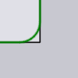
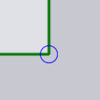
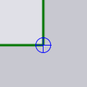

Penanganan Sudut

Panel Corner Treatment digunakan untuk melakukan berbagai jenis penanganan khusus pada sudut tajam pemotongan laser. Panel ini dapat diakses dengan mengklik di dekat sudut pemotongan laser.
-
Auto compute: Saat pengaturan hitung otomatis diaktifkan (default), TecZone Laser menghitung pemrosesan sudut yang sesuai berdasarkan mesin, LTT yang digunakan, dan besaran sudut pada sudut tersebut. Jika Anda ingin mengedit penanganan sudut, Anda harus menonaktifkannya.
-
Perlakuan permukaan: Jenis penanganan sudut (lihat tabel di bawah untuk detailnya). Beberapa metode penanganan memiliki parameter (seperti radius atau waktu yang digunakan untuk mengontrol proses sudut).
-
Radius atau Time (sec): Beberapa penanganan (seperti Rounding dan Looping) memerlukan radius sebagai masukan. Beberapa seperti Dwell dan Cool memerlukan waktu tunda.
-
Selektor di bagian bawah panel ini dapat digunakan untuk memperluas rangkaian sudut yang dipilih sehingga semuanya dapat diedit secara bersamaan:
-
Similar on this contour: Jika Anda mengklik ini, semua sudut dalam kontur ini yang memiliki besaran sudut serupa dengan yang dipilih akan disorot dengan tanda silang biru kecil. Kemudian, semua pengeditan yang Anda lakukan akan diterapkan ke semua sudut ini.[1]
-
All on this contour: Seperti selektor di atas, tetapi memilih semua sudut pada kontur ini, terlepas dari besaran sudutnya.
-
Similar on all contours: Memilih semua sudut yang serupa (besaran sudut yang sama) pada semua kontur yang telah diatur alatnya pada komponen sehingga semuanya dapat diedit secara paralel.
-
Metode Penanganan
Tabel di bawah ini menunjukkan berbagai metode penanganan sudut. Metode Rounding dan Looping secara nyata mengubah geometri pemotongan, sedangkan metode lainnya menambahkan ikon kecil di sudut untuk menunjukkan jenis pemrosesan yang terjadi di sana.
| Penanganan | Penjelasan | Contoh |
|---|---|---|
Do nothing |
Tidak ada pemrosesan sudut yang dilakukan |
|
Rounding |
Membuat lengkungan di sudut-sudut |
 |
Looping |
Membuat loop di sudut-sudut |
|
Dwell |
Berdiam di sudut-sudut |
 |
Cool |
Mendinginkan laser di sudut-sudut |
 |
Stop |
Berhenti di sudut |
|
Slowdown |
Memperlambat laser di sudut-sudut |
|